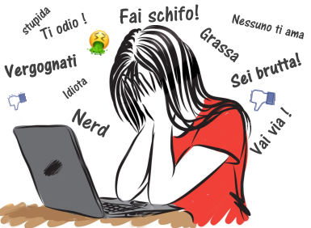
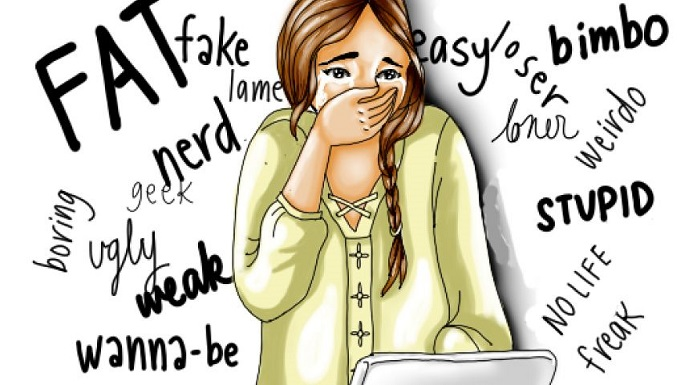

Cyberbullismo
Il cyberbullismo è il bullismo che avviene online: sono ad esempio offese e insulti rivolti a persone conosciute o anche sconosciute virtualmente, via chat, tramite social network come Facebook o Instagram. Il tratto distintivo tra le due forme di bullismo è il completo anonimato in cui può avvenire il cyberbullismo. Infatti, queste forme di derisioni virtuali possono provenire anche da utenti anonimi e, sebbene ogni attività via internet sia tracciata, a volte può diventare veramente difficile per la vittima scoprire chi è il suo persecutore. Sono temi estremamente delicati e le conseguenze possono essere molto pericolose, per questo invitiamo chiunque sia vittima di bullismo e di cyberbullismo a parlarne, a chiedere aiuto ad un adulto, a rivolgersi a chi di competenza per porre fine a questi comportamenti.

Cyberbullismo:conseguense a lungo termine
ripetute bocciature ed abbandono scolastico;
comportamenti devianti e antisociali;
violenza in famiglia ed aggressività sul lavoro;
possibile sviluppo di un disturbo antisociale della personalità.
Cosa è il cyberbullismo?
